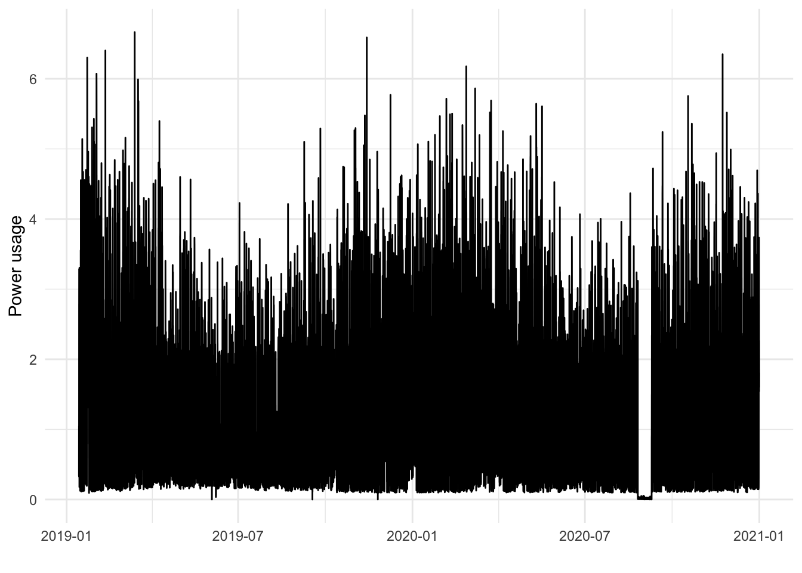
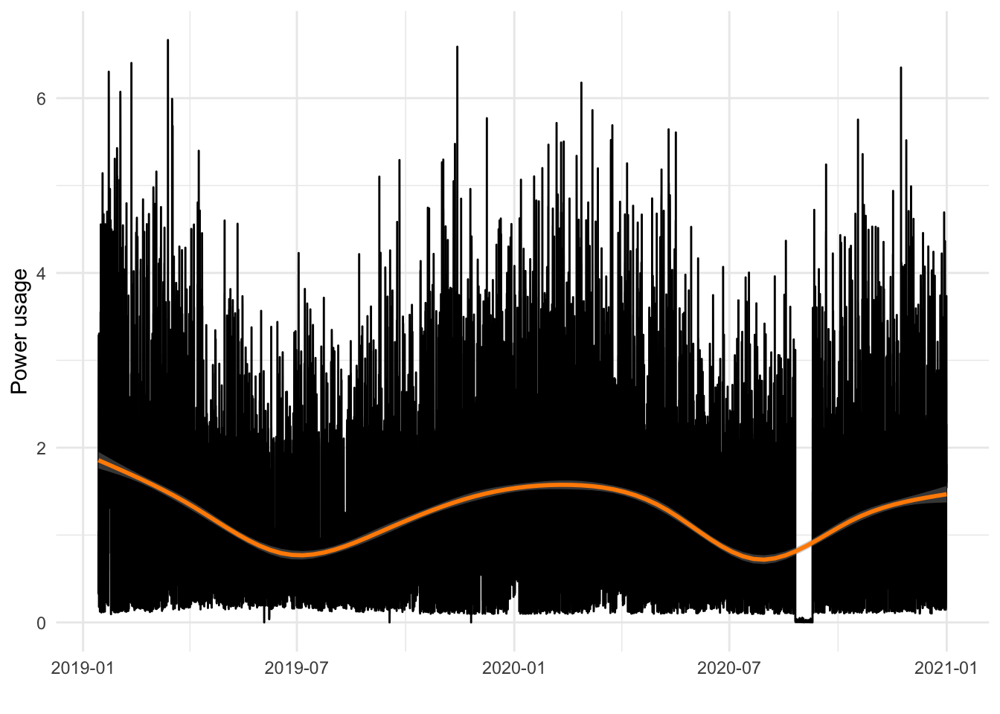
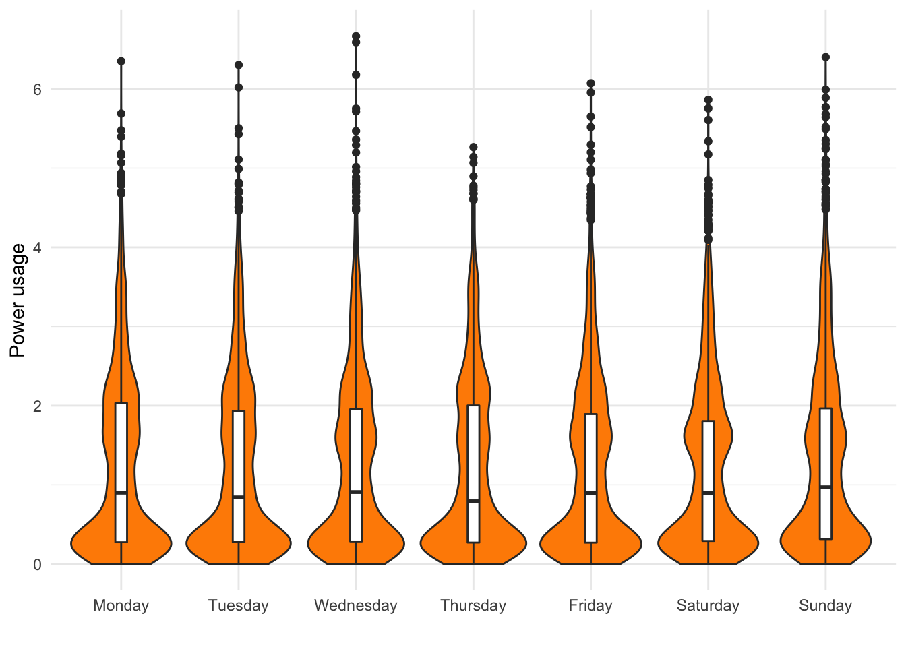
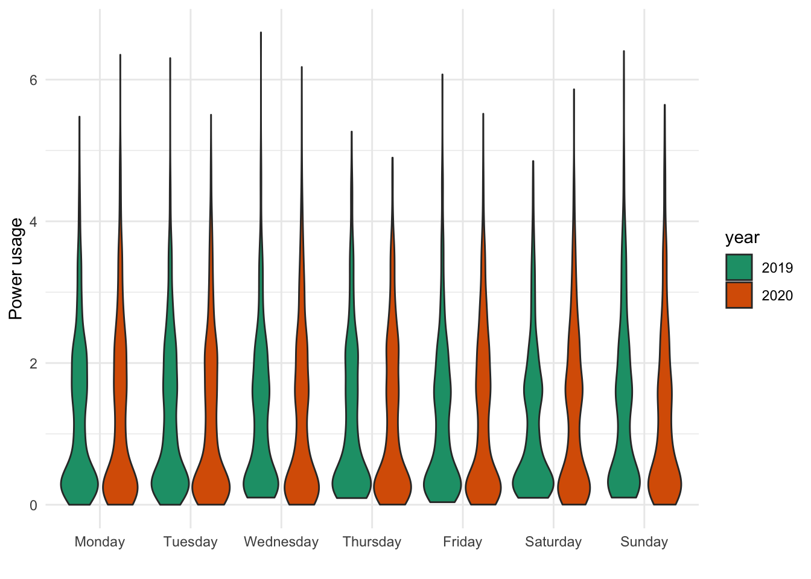
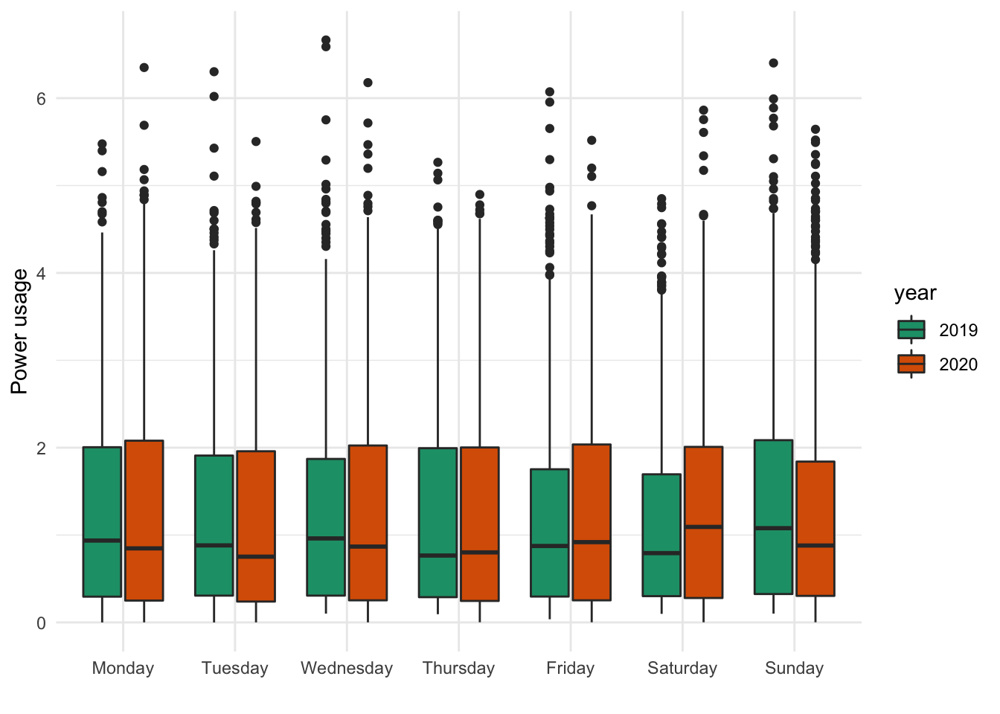
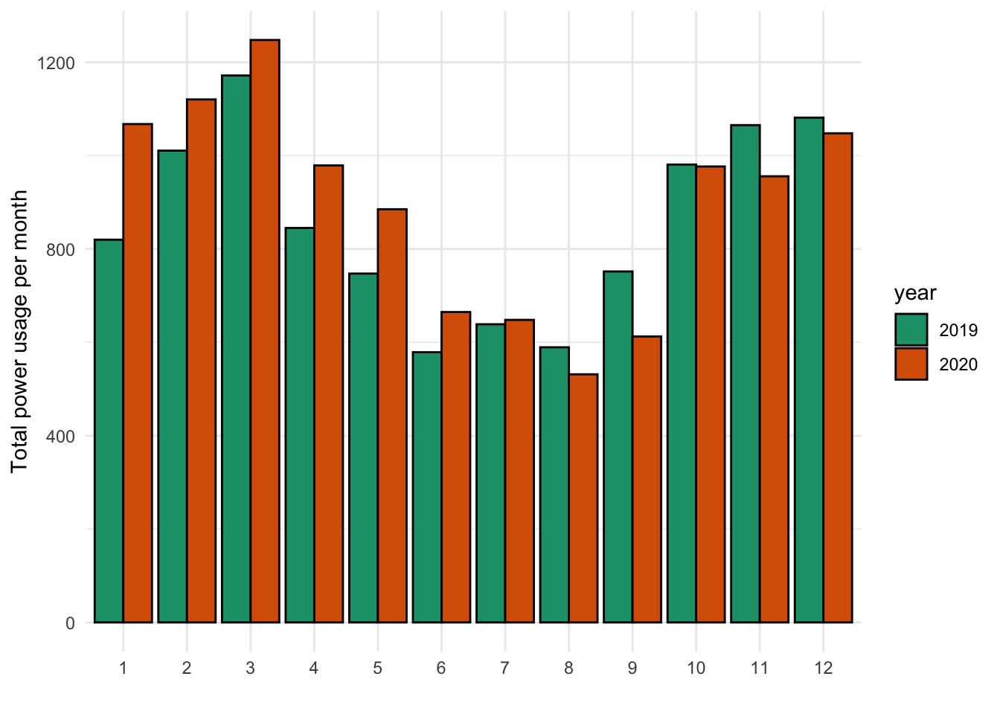

Latest update: 25.01.2021
Welcome to my power usage project! Through the fantastic service elhub I have downloaded (and continue to download) monthly data sets that contain the hourly power usage in my appartment. I made an R-package that contains all the data plus some useful functions. Here I will explore some visualisations of the data.
library(power.usage.analysis)
library(ggplot2)
library(dplyr)theme_set(theme_minimal())First, let us load the data and look at the structure of it.
summary(power_data)## Fra Til KWH.60.Forbruk
## Length:17233 Length:17233 Min. :0.000
## Class :character Class :character 1st Qu.:0.286
## Mode :character Mode :character Median :0.886
## Mean :1.220
## 3rd Qu.:1.935
## Max. :6.666
## NA's :1
## X...code.to.prepare..DATASET..dataset.goes.here
## Length:17233
## Class :character
## Mode :character
##
##
##
## This is already quite clean and nice, but we can do better. The function clean_and_prepare will add some new columns giving the year, month and weekday of each observation. In addition, we will format the date so R recognizes it as such.
?clean_and_preparedata <- clean_and_prepare(power_data)head(data)## tid forbruk date month weekday year
## ...1 2019-01-14 00:00:00 0.338 2019-01-13 1 Monday 2019
## ...2 2019-01-14 01:00:00 1.047 2019-01-14 1 Monday 2019
## ...3 2019-01-14 02:00:00 0.327 2019-01-14 1 Monday 2019
## ...4 2019-01-14 03:00:00 1.475 2019-01-14 1 Monday 2019
## ...5 2019-01-14 04:00:00 2.791 2019-01-14 1 Monday 2019
## ...6 2019-01-14 05:00:00 3.286 2019-01-14 1 Monday 2019Let’s try a simple plot of all the observations.
p_simple <- ggplot(data, aes(x = tid, y = forbruk)) +
geom_line() +
ylab("Power usage") +
xlab("")
p_simple
This is a mess. While we do see some general tendencies that are interesting (like maximum consumption varying seasonally), it is difficult to tell what is going on in all the noise. Maybe we can smooth it?
p_simple + geom_smooth(color = "darkorange")
This certainly looks smooth, but it’s still looking quite messy. I’ll try to add a better theme than the default.
—-add theme—-
—–also comment on missing values——
Another option is to try to group the data by some time period by summing or averaging it.
Let’s first see if there seems to be any difference in consumption for each weekday.
ggplot(data, aes(x = weekday, y = forbruk)) +
geom_violin(fill = "darkorange") +
geom_boxplot(width=0.1) +
ylab("Power usage") +
xlab("")
Okay, it pretty much looks like the distribution is the same for each week day, maybe not surprisingly, although I might have expected the consumption to be a bit higher during the week-end. However, during most of 2020 we worked from home. Could it be that this is affecting the results, and that weekday differences were larger in 2019? Let’s investigate:
ggplot(data, aes(x = weekday, y = forbruk, fill = year)) +
geom_violin() +
scale_fill_brewer(palette = "Dark2") +
ylab("Power usage") +
xlab("")
ggplot(data, aes(x = weekday, y = forbruk, fill = year)) +
geom_boxplot() +
scale_fill_brewer(palette = "Dark2") +
ylab("Power usage") +
xlab("")
monthly_data <- data %>%
group_by(month) %>%
summarise(sum_forb = sum(forbruk))
year_month <- data %>%
group_by(month, year) %>%
summarise(sum_forb = sum(forbruk))ggplot(year_month, aes(x = month, y = sum_forb)) +
geom_col(aes(fill = year), color = "black", position = "dodge") +
scale_fill_brewer(palette = "Dark2") +
ylab("Total power usage per month") +
xlab("")